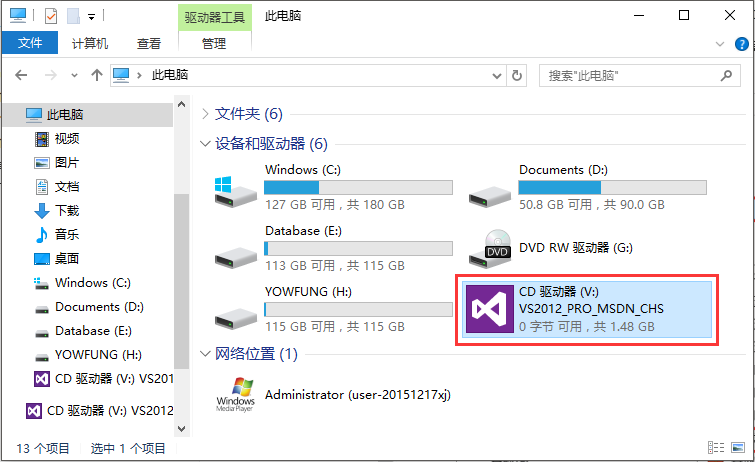

网园资讯工作室 编程部 2017/10/12
下载方式1： 在Q群文件里下载。
下载方式2：拿U盘到网园（黎灿308）来拷贝。
下载方式3：百度云下载
下载方式4： 迅雷下载
注：若想要其他版本的Visual Studio，可以到 MSDN,我告诉你 这里去下载。电脑配置好点的可以下载2015版或2017版。不同版本的VS安装步骤可能不同，但总体是差不多的，故在此不作详细介绍，此教程仅针对2012版的VS。 为了适应培训课程，建议还是装2012版的。
打开下载目录，找到刚刚下载的VS2012安装镜像（.iso文件），点击右键，用“好压”加载至虚拟光驱。
ps：一般压缩软件都有加载虚拟光驱的功能，如果没有的话，可以安装好压。虚拟光驱就是虚拟的光盘，加载成功后可以在“此电脑”中看到多出来一个光盘。
加载虚拟光驱成功后，打开“此电脑”，可以看到出现了VS2012的安装光盘，打开光盘，找到vs_professional.exe并双击打开。

选择安装路径，勾选同意条款并进行下一步。
勾选要安装的可选功能，其中红色框框这三个必须勾选，其他看个人需要，建议全选。选择好之后点击“安装”。
正在安装，这是一个漫长的过程。
安装完成，点击启动。
选择默认环境设置。这里我们选择Web开发(仅代码)，下面的本地帮助文档，可选最小值也可选无。
接着会出现一个加载用户设置的界面，加载完成后可以进入到Visual Studio 2012的主界面啦。
安装完成后在桌面上默认没有图标，以后要使用VS时，可以在开始菜单的所有程序 里找，也可以直接按快捷键Win+S，然后输入Visual ... 。
现在简单说一下如何用Visual Studio 2012新建一个空白的ASP.NET网站。
文件→新建网站 。
新建网站窗口中，左侧选择已安装→模板→Visual C#，注意一定一定要选择Visual C#，然后中间选中ASP.NET空网站，接着在下面的Web位置中选择文件系统 和网站存放路径（网站名称必须是英文）。
解决方案资源管理器中看到已经创建好的解决方案，该解决方案下默认只有一个文件（Web.config）。如果没有显示解决方案资源管理器，可以点击菜单栏上的视图→解决方案资源管理器。
解决方案资源管理器中选中刚刚创建的那个解决方案，右键之，选择添加→Web窗体 。
.aspx文件是ASP.NET前端页面文件，aspx.cs是ASP.NET的后端程序文件（C#源代码文件）。
调试→开始执行（不调试），或者按快捷键Ctrl+F5，此时网站将会运行，如果没有出现报错页面，则表示网站正常运行，即网站创建成功。
熟练使用各种快捷键可以大大提高开发效率，使操作更加简单，也更省时间。以下快捷中加粗的为必须记住的快捷键。
| 快捷键 | 功能 | 快捷键 | 功能 |
|---|---|---|---|
| Ctrl+K+C | 注释 | Ctrl+K+U | 取消注释 |
| Ctrl+J | 智能感知 | Ctrl+K+D | 格式化代码 |
| Home | 到行首 | End | 到行尾 |
| Ctrl+Home | 到文档头 | Ctrl+End | 到文档尾 |
| Shift+方向键 | 选择文本 | Shift+Home/End | 选择文本 |
| Ctrl+F | 查找 | Ctrl+H | 替换 |
| Ctrl+Z | 撤销 | Ctrl+Y | 取消撤销 |
| Ctrl+S | 保存 | Alt+Tab | 切换文档 |
| F5 | 启动调试 | Ctrl+F5 | 开始运行（不调试） |
| F9 | 设置断点 | F12 | 跳转到定义 |
| Tab | 代码缩进 | Del | 向后删除 |
在用VS学习ASP.NET和C#时遇到问题要怎么办？
- 先自己检查一遍代码。
- 如果自己检查不出问题，就按Ctrl+F5开始执行（不调试），看报错信息，然后把报错信息复制到百度搜索相关内容。
- 如果百度找不到相关内容，就把报错信息截图发给师兄，同时也把相关代码也截图发给师兄。注意，是截图，不是复制文字，也不是拍照，因为截图我们才看得清是什么问题。
VS如何设置显示行号？
显示行号可以方便我们知道自己写了多少代码，当网站运行出错时，通过行号也能很方便快捷地找到出错的地方。显示行号可以通过以下步骤进行设置：
- 点击VS菜单栏上的
工具→选项。- 在弹出的“选项”界面中，左边展开
文本编辑器，选中所有语言，然后右边勾选行号，点击确定。
为了更好地调试，强烈建议下载安装Google Chrome浏览器。